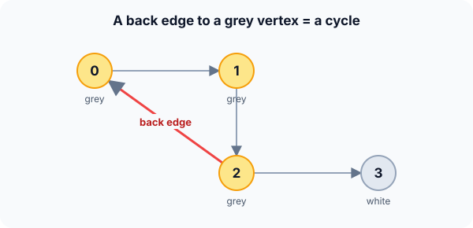

Prerequisites
- DFS and recursion.
- Directed graphs.
- Union-Find, for the undirected method.
The analogy
Everyday analogy
Imagine walking through a building and unrolling a thread behind you. If you ever reach a room where your current thread already lies, you've walked in a circle.
The grey colour is that thread: it marks the vertices on the path you're exploring right now. Black rooms are finished; meeting one again is fine, it just means two paths join.
How it works
Precondition: the colour method below is for directed graphs. For undirected graphs, use Union-Find, or DFS that ignores the edge back to the parent.
Start with one DFS by hand
Directed edges: 0 → 1, 1 → 2, 2 → 0, 2 → 3. All vertices start white. Start DFS at 0, colour a vertex grey when you enter it and black when you leave. Predict, then open "Check".
Example: predict before you read
Step 1. Enter 0, then 1, then 2. Predict their colours.
Check
All three are grey: they are on the current path 0 → 1 → 2.
Step 2. Cover the next line and guess: at 2, you see the edge 2 → 0. What does it mean?
Check
0 is grey, so the edge points back into the current path: a cycle 0 → 1 → 2 → 0.
Step 3. Remove the edge 2 → 0 and run again. Predict whether any cycle is found.
Check
No. 0, 1, 2, 3 are explored and turn black one by one; no edge ever points to a grey vertex.

Quick recall: Before reading further, cover the text above and say out loud: what do grey and black mean?
Check your answer
Grey: entered but not finished, so on the current path. Black: finished, along with everything reachable from it.
Finish the picture: the undirected case
Undirected edges A–B, B–C, C–A. Use Union-Find: for each edge, check whether its ends are already in the same group.
- A–B, then B–C. Predict the groups.
Check
A–B: different groups, merge {A, B}. B–C: different, merge {A, B, C}.
- C–A. Predict the result.
Check
C and A are already in the same group, so this edge closes a cycle.
Quick recall: Without scrolling up, say out loud: why is an edge to a black vertex not a cycle?
Check your answer
Everything reachable from a black vertex is already explored and doesn't lead back to the current path, so the edge just joins an old branch.
The rule in plain words
Directed: run DFS from every white vertex. Colour grey on entry and black on exit; an edge to a grey vertex is a back edge, which means a cycle.
Undirected: process edges with Union-Find; an edge whose ends are already connected closes a cycle.
Quick recall: Before you read the code, write the colour rule in your own words. Then check below.
Check your answer
Colour a vertex grey when you start exploring it. For each neighbour: grey means a cycle; white means explore it. When all neighbours are done, colour the vertex black.
The code
Read this code after you have done the DFS by hand. It will make more sense.
int has_cycle_from(int adj[][4], int n, int u, int color[]) { /* 0 white, 1 grey, 2 black */
color[u] = 1; /* on the current path */
for (int v = 0; v < n; v++) {
if (!adj[u][v]) continue;
if (color[v] == 1) return 1; /* back edge: cycle */
if (color[v] == 0 && has_cycle_from(adj, n, v, color)) return 1;
}
color[u] = 2; /* fully explored */
return 0;
}int has_cycle(int adj[][4], int n, int color[]) { /* color[] starts all 0 */
for (int u = 0; u < n; u++)
if (color[u] == 0 && has_cycle_from(adj, n, u, color)) return 1;
return 0;
}Definition
What you just did, in one line: a directed graph has a cycle exactly when DFS finds a back edge, an edge to a vertex that is still on the current DFS path (grey).
flowchart TD
A["colour u grey"] --> B{"next neighbour v?"}
B -->|"v is grey"| C["cycle found"]
B -->|"v is white"| D["explore v"]
B -->|"v is black"| B
D --> B
B -->|"no more neighbours"| E["colour u black, return"]
How fast is it?
Quick recall: Before looking at the formula, predict: does checking colours add to DFS's cost?
Check your answer
No, it's one array lookup per edge, so the total stays $O(V + E)$.
It is a DFS with a constant-time colour check per edge:
$$O(V + E) \text{ (lists)}, \qquad O\big(E \, \alpha(V)\big) \text{ (Union-Find, undirected)}$$| Method | Graph type | Cost |
|---|---|---|
| DFS with three colours | Directed | $O(V + E)$ |
| DFS ignoring the parent edge | Undirected | $O(V + E)$ |
| Union-Find over the edges | Undirected | $O(E \, \alpha(V))$ |
| Kahn's topological sort | Directed | $O(V + E)$: fewer than $V$ outputs |
Warning
Two colours (visited / not visited) are not enough for directed graphs. In 0 → 1, 0 → 2, 1 → 2, vertex 2 is visited twice, but there is no cycle. Only an edge to a grey vertex proves a cycle.
Exam tip
State which graph type you are handling. Directed: grey/black DFS or Kahn. Undirected: Union-Find, or DFS where an edge to a visited vertex other than the parent means a cycle.
Common mistakes
- Using a single "visited" flag on a directed graph and reporting false cycles.
- In undirected DFS, treating the edge back to the parent as a cycle.
- Running DFS only from vertex 0 and missing cycles in other parts of the graph.
Try it yourself
Exercise 1 (warm-up)
Directed edges 0 → 1, 0 → 2, 1 → 2. Is there a cycle? What colour is 2 when 0 → 2 is examined?
Hint
Follow DFS from 0, visiting 1 first.
Answer
No cycle. DFS goes 0 → 1 → 2, and 2 finishes (black). Back at 0, the edge 0 → 2 points to a black vertex, which is not a cycle.
Exercise 2 (a bit harder)
Directed edges 0 → 1, 1 → 2, 2 → 3, 3 → 1. Run the colour DFS from 0: which edge reveals the cycle, and which vertices are on it? Write your answer down before you open it.
Show answer
The path 0 → 1 → 2 → 3 is all grey; at 3, the edge 3 → 1 points to grey vertex 1, a back edge. The cycle is 1 → 2 → 3 → 1; vertex 0 leads into it but isn't part of it.
Did you know?
Did you know?
Operating systems detect deadlocks this way: build a "wait-for" graph of which process waits for which, and a cycle means they are all stuck.
Linked-list cycle detection uses a different trick, Floyd's "tortoise and hare": two pointers at different speeds meet if and only if there is a loop.
Key points to remember
If you remember one thing from each line, remember the because.
- An edge to a grey vertex means a cycle because grey vertices form the current path, so the edge closes a loop.
- Edges to black vertices are safe because a finished vertex cannot reach the current path.
- It costs $O(V + E)$ because it is a single DFS with constant work per edge.
- Undirected graphs can use Union-Find because an edge inside one component closes a cycle.
- DFS restarts from every white vertex because a cycle may be in a part not reachable from the first start.
Self-check questions
Answer these in order, out loud. They follow the page, so your answers become the script of your video.
- How is DFS cycle detection like unrolling a thread through a building?
Sample answer
The thread marks your current path; if you reach a room where the thread already lies, you've walked in a circle.
- Walk through the colour DFS on 0 → 1, 1 → 2, 2 → 0, 2 → 3.
Sample answer
0, 1, 2 become grey along the path; at 2 the edge 2 → 0 points to grey 0, so there is a cycle 0 → 1 → 2 → 0.
- Why does the code colour
ublack only after the loop?A good answer says what grey must represent.
Sample answer
Grey must mean "still on the current path". u stays on the path until all its neighbours are explored; marking it black earlier would hide back edges to it.
- So when does a directed graph have a cycle, in one sentence?
Sample answer
Exactly when a DFS finds an edge to a vertex that is still on the current DFS path.
- Why aren't two colours enough for directed graphs?
A good answer gives the 0 → 1, 0 → 2, 1 → 2 example.
Sample answer
Vertex 2 is reached twice there without any cycle. A plain "visited" flag can't tell a back edge (cycle) from an edge into a finished branch.
- What does cycle detection cost?
Sample answer
$O(V + E)$ with DFS; $O(E \, \alpha(V))$ with Union-Find on undirected graphs.
- How would you detect a cycle in an undirected graph?
Sample answer
Union-Find over the edges (an edge inside one group is a cycle), or DFS where reaching a visited vertex other than your parent means a cycle.
- If you had to teach this to a friend in 2 minutes, what would you leave out, and why?
Sample answer
I'd leave out the undirected variants and the deadlock story. I'd keep the thread analogy, the 0 → 1 → 2 → 0 example, and "edge to a grey vertex means a cycle, $O(V + E)$".
External resources
- VisuAlgo: DFS: watch DFS classify tree and back edges.
- GeeksforGeeks: Detect a cycle in a directed graph: the colour method with code.
- Wikipedia: Cycle (graph theory): definitions and detection methods.
Videos
- YouTube search: cycle detection with DFS: pick a walkthrough of the three colours.